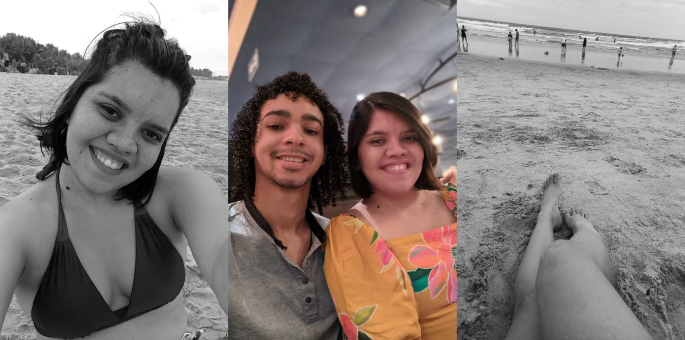

13 de Janeiro de 2023
Viagem à Fortaleza com meu Amor

Estando com você até uma ida a padaria vira um rolê, a gente não
precisa de muito para se divertir, não precisamos de mais do que a
companhia um do outro e aí o que era um dia vazio se torna uma tarde
gostosa cheia de lanchinhos e conversas deliciosas, você faz eternizar
momentos pequenos. Experenciamos muitas aventuras juntos, desde a
decolagem do avião até o último rolê pela areia da praia, são inumeras
as histórias dessa viagem inesquecivel....